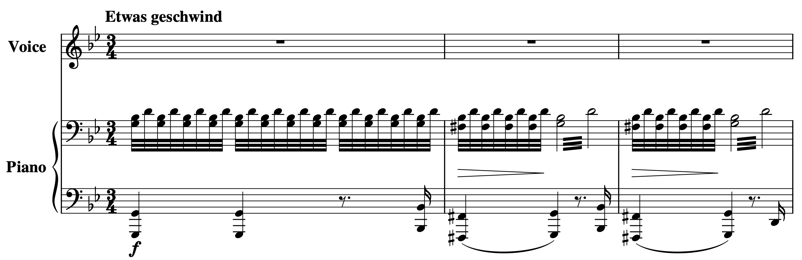
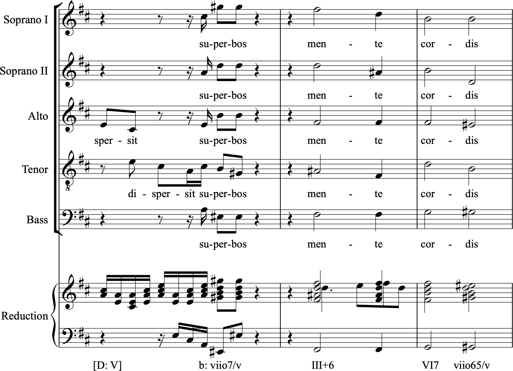
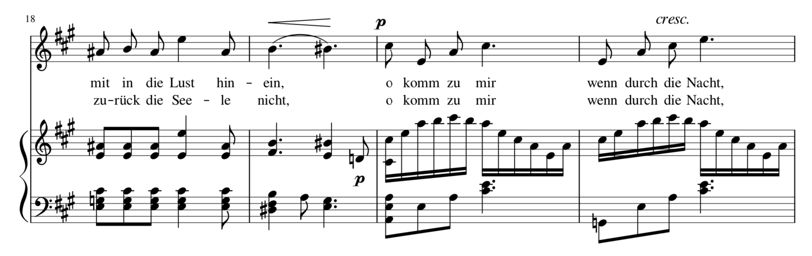

Open Music Theory：繁體中文版
增三和弦的運用
重點整理
- 遠比其他三種三和弦——大、小、減三和弦——少見。
- 它值得留意的原因包括：
- 罕見本身就能產生效果；
- 對稱的構造帶來靈活性與模糊性，與減七和弦相似。
- 最常以兩種形式出現：
- 和聲小調中的 III+；這是大小調系統中，不額外作半音變化就能形成增三和弦的唯一情況。
- 大調中 V 與 I 之間的半音經過和弦：V–V+–I。
我們是不是漏掉了什麼？半音和聲已經學了不少，卻幾乎沒談到四種看似屬於自然音體系的三和弦之一：我們已熟悉增六和弦，卻還不熟悉增三和弦。增三和弦究竟是怎麼回事？作曲家如何使用它？我們怎麼會忽略它這麼久，又為何許多教科書都只是一筆帶過？
先回想一下，只用大三度與小三度相疊，可以構成四種三和弦：
- 減三和弦：小三度＋小三度。
- 小三和弦：小三度＋大三度。
- 大三和弦：大三度＋小三度。
- 增三和弦：大三度＋大三度。
因此，增三和弦也是這組可能性的一員，地位卻似乎不與其他成員相等，至少在共通實踐時期的作曲家眼中如此。大三和弦與小三和弦顯然是調性音樂的要角；減三和弦也一樣，尤其是它作為 viio，或作為 V7 一部分時的屬功能。相較於這些主角，增三和弦的角色就比較邊緣。
查看英文原文
Key Takeaways
- much rarer than the other three triad types (major, minor, and diminished).
- interesting for several reasons including:
- that rarity itself, and
- the symmetrical construction, which creates potential flexibility and ambiguity (just like with the diminished seventh chord)
- most often seen in one of two forms:
- as III+ in harmonic minor (this being the only form in the major/minor system without chromatic alteration), and
- as a chromatic passing chord between V and I in a major key: V, V+, I.
Aren’t we forgetting something here? We’re now well into chromatic harmony, yet we’ve hardly mentioned one of the four types of ostensibly diatonic triads: we’re up to speed with augmented sixth chords, but not the augmented triad. So what is this augmented triad all about? How do composers use it? How have we neglected it so long (and why do so many textbooks brush over it altogether)?
Recall that we have four types of triads that can be constructed with major and minor thirds alone:
- Diminished triad (minor third + minor third)
- Minor triad (minor third + major third)
- Major triad (major third + minor third)
- Augmented triad (major third + major third)
So the augmented triad is part of this set of possibilities, but apparently not an equal member, at least not in the eyes of common practice composers. Clearly major and minor triads are mission critical to tonal music, and so is the diminished triad, especially in its dominant function role (as viio and as a part of V7). The augmented triad is a slightly peripheral character in relation to those protagonists.
一定涉及半音變化嗎？
增三和弦之所以少見，部分原因就在大小調系統本身：只有和聲小調的 III+，不需要額外作半音變化就能出現。這個 III+ 與屬和弦 V、小調主和弦 i 都很接近：兩種比較中，都有兩個共同音級，只有另一個和弦音相差半音：
- III+ 與 V：共有 [latex]\hat5[/latex] 與 [latex]\hat7[/latex]；[latex]\hat2[/latex] 與 [latex]\hat3[/latex] 之間相差半音。
- III+ 與 i：共有 [latex]\hat3[/latex] 與 [latex]\hat5[/latex]；[latex]\hat1[/latex] 與 [latex]\hat7[/latex] 之間相差半音。
整體而言，我認為 III+ 的聲響與用法，通常暗示屬功能。請聽聽、看看舒伯特〈阿特拉斯〉（Der Atlas）開頭的例1，再想想你的看法：
- B♭ 與 D 始終保持不變，也就是 [latex]\hat3[/latex] 與 [latex]\hat5[/latex]。
- G 移到 F♯，再回到 G，也就是 [latex]\hat1[/latex] 與 [latex]\hat7[/latex] 之間的移動。
- 這或許會讓人聽成主、屬和聲的交替，但聲部變化非常細微。

- Etwas geschwind＝稍快；
- Voice＝聲樂；
- Piano＝鋼琴；
- f＝強。
- 譜例為兩個降號、3/4拍，鋼琴以震音維持 B♭、D，並在 G 與 F♯ 之間移動；
- 聲樂三小節均休止。
減弱記號與圓滑線保留原譜。
以下是全曲：
這些和弦之間的微小移動，涉及「節約式聲部連接」（parsimonious voice leading）的一個核心特點。這也是新黎曼和聲理論相當重視的觀念；新黎曼理論試圖說明十九世紀晚期日益常見、範圍更廣的調性關係。詳見〈新黎曼三和弦進行〉。現在，先繼續看看增三和弦的實際用例。
查看英文原文
Always Chromatic?
Part of that rarity has to do with the structure of the major/minor system itself: III+ in harmonic minor is the only time the augmented triad appears in the major/minor system without chromatic alteration. This III+ triad is closely related to both the dominant (V) and minor tonic (i): in both cases, two scale degrees are held common and only one semitone distinguishes the chord tone which changes:
- III+ and V: [latex]\hat5[/latex] and [latex]\hat7[/latex] in common, semitone between [latex]\hat2[/latex] and [latex]\hat3[/latex];
- III+ and i: [latex]\hat3[/latex] and [latex]\hat5[/latex] in common, semitone between [latex]\hat1[/latex] and [latex]\hat7[/latex].
Overall, I'd say that the sound and usage of III+ typically suggests a dominant function. See what you think of the following example from the opening of Schubert's "Der Atlas" (Example 1) in which:
- B♭ and D remain constant throughout ([latex]\hat3[/latex] and [latex]\hat5[/latex]).
- G moves to F♯ and back ([latex]\hat1[/latex] and [latex]\hat7[/latex]).
- This arguably gives the impression of a tonic-dominant alternation, but with very slight changes.
Here is the entire song:
The small steps between these chords relate to a key part of the "parsimonious voice leading" that’s so important to the "Neo-Riemannian" approach to harmony, which seeks to account for the extended tonal relations that become more common in the late 19th century. For more on that, see Neo-Riemannian Triadic Progressions. For now, let’s continue to look at some examples of the augmented triad in practice.
很少成為焦點
增三和弦的地位比較邊緣，也比較少見，或許讓人覺得它不那麼重要。但黃金、鑽石與其他稀有商品的價格提醒我們：稀少本身也可能很有價值。荀貝格認為，正因如此，增三和弦比減三和弦與減七和弦更「不容易落入陳腔濫調」（1911；英譯本1983，第239頁）。
「少見」也需要說得更清楚。談和聲的罕見程度時，我們通常是說：某個和弦很少擔任焦點角色。Richard Cohn 曾指出：「1830年以前的音樂即使出現增三和弦，它的行為通常也受到妥善規範，並不引人注目；它藏在樂句中間，很少暴露在樂句邊界，迅速經過，而且沒有拍節重音。」（2012，第43頁）
一般情況或許如此，但不代表沒有耀眼的反例。例2出自巴赫《聖母頌》（Magnificat，1723、1733）〈Fecit Potentiam〉結尾的「mente cordis」段落。這一刻格外鮮明：增三和弦不只出現了，還由幾乎全體演出者跨越整個音域奏出；在它之前，先有一個減七和弦，再出現戲劇性的全體休止。恐怕很難找到另一個增三和弦，能如此清楚而戲劇性地站到音樂前景。

- Soprano I／II＝第一／第二女高音；
- Alto＝女低音；
- Tenor＝男高音；
- Bass＝男低音；
- Reduction＝縮譜。
- 拉丁文歌詞為「dispersit superbos mente cordis」的片段，意為「驅散心中驕傲的人」；
- 有些聲部只從詞尾或 superbos 開始。
- 譜下原標記依序為 [D: V]、b: vii°7/v、III+6、VI7、vii°65/v；
- 大寫 D 表 D 大調，小寫 b 表 B 小調，轉位數字與局部分析照原圖保留。
查看英文原文
Rarely focal
The relatively peripheral role and the rarity of augmented triads may be thought to diminish its importance, though as the price of gold, diamond, and other rare commodities attest, that very rarity can be valuable. For Schoenberg, this makes the augmented triad "better protected against banality" than the diminished triad and seventh (1911, trans. ed. 1983, p. 239).
The idea of rarity also needs unpacking: when we speak of "rarity" in harmony, we usually mean that it is unusual to see that chord in a focal role. This speaks to Richard Cohn’s observation that "when an augmented triad appears in music before 1830, its behavior is normally well regulated and unobtrusive, tucked into the middle of a phrase rather than exposed at its boundaries, passed through quickly and lacking metric accent" (2012, p. 43).
This may be true in the general case, though that’s not to say there aren’t glorious counterexamples. Example 2 sets out such an example from the "mente cordis" section that concludes the "Fecit Potentiam" of Bach’s Magnificat (1723, 1733). This is a remarkable moment: not only is there an augmented triad at all, but it is introduced by nearly full forces, spanning the full register, and after a dramatic general pause which itself is preceded by a diminished seventh. You couldn’t hope to find a clearer, more dramatically foregrounded augmented triad in any repertoire.
半音經過和弦
雖然增三和弦只有一種不額外作半音變化的形式，也就是小調的 III+，但納入半音變化後，可能性顯然多得多。其中仍有某些用法特別常見：例如在大調 V 到 I 的半音經過進行中，用半音移動「填滿」[latex]\hat2[/latex] 到 [latex]\hat3[/latex] 的全音距離，讓增和弦短暫出現。這可以有幾種形式：
- 直接採用 V–V+–I。
- 在起始的 [latex]\hat2[/latex] 上配另一個和聲，例如 ii–V+–I。
- 可以有七音，也可以沒有，例如 ii7–V+7–I。
例3出自芬妮・孟德爾頌・韓瑟爾的〈船歌〉（Gondellied，《六首歌曲》Op. 1 第6號），呈現了這個手法。第19–20小節可視為 A 大調中的 V6/V–V+–I 終止；若計入七音，則是 V[latex]\mathrm{^6_5}[/latex]/V–V+7–I。在這裡：
- 增和弦擔任屬功能。
- 增和弦的關鍵音 B♯，是升高後的上主音，來自 [latex]\hat2[/latex] 到 [latex]\hat3[/latex] 的半音移動；聲樂聲部與重複這條線的鋼琴聲部都有這個進行。

- 左上18為起始小節號；
- 譜例共四小節，包含兩段德文歌詞。
- 第一段片語「mit in die Lust hinein」意為「一同投入歡樂之中」；
- 第二段「zurück die Seele nicht」是前文延續的殘句，涉及「靈魂不……回去」，不能僅憑此截圖補成完整句。
兩段後面同為「o komm zu mir, wenn durch die Nacht」＝「噢，來到我身邊，當……穿過夜色時」，末句也未完。
- p＝弱；
- cresc. 與張開的楔形記號＝漸強。
- 第19小節 B–B♯ 的半音線條，接到第20小節的 C♯；
- 歌詞分音節連字線保留。
以下是全曲：
查看英文原文
Chromatic passing chord
Although there is only one diatonic form of the augmented triad (III+ in minor), there are clearly many more possibilities when we expand the remit to include chromatic alterations. Here too, however, some are more common than others. A particularly favored use sees the augmented chord as part of a chromatic passing motion from V to I in major, with the whole-tone step from [latex]\hat2[/latex] to [latex]\hat3[/latex] "filled in" with a chromatic semitone motion that gives a fleeing . This can appear in several ways:
- As a straightforward V–V+–I
- With another harmony on the initial [latex]\hat2[/latex]: e.g., ii–V+–I
- With or without sevenths: e.g., ii7–V+7–I
Example 3, from Fanny Mendelssohn Hensel's Gondellied (6 Lieder, Op. 1, no. 6), sets this out. Measures 19–20 can be seen as a V6/V–V+–I cadence in A (or, with sevenths, V[latex]\mathrm{^6_5}[/latex]/V–V+7–I) where:
- the augmented chord appears in a dominant function;
- the crucial note of that augmented chord (B♯) is the raised supertonic, arising through chromatic motion from [latex]\hat2[/latex] to [latex]\hat3[/latex] (both in the voice part and doubled in the piano).
Here is the entire song:
李斯特《R. W. Venezia》中的增三和弦：前景還是背景？
IMSLP 上的《R. W. Venezia》樂譜。以下提供完整兩頁本機樂譜，可展開對照。
譯註來源：All Piano Scores：此處採用的完整兩頁PDF
到目前為止，我們看過不額外作半音變化的增三和弦 III+，也看過經半音變化、但功能清楚的 V+。現在，再深入半音化的領域，看看以增三和弦為突出焦點的作品。李斯特的晚期音樂包含一些迷人的小品，其中許多都大幅強調增三和弦。[1]《R. W. Venezia》就是一例：它突出增和弦，尤其是 C♯ 增三和弦 [C♯、F、A]。這個和弦得到如此大的份量，彷彿主張自己在全曲中具有首要地位，甚至具有某種主音性；這至少挑戰了 B♭ 作為調性中心的地位，也可能使後者退居次位。
Cohn（2012，第47頁）承接 Harrison（1994，第75頁起）的討論，談到舒伯特〈城市〉（Die Stadt）中對減和弦的類似強調。他貼切地指出，這些作品把「通常保留給協和聲響的修辭外衣」，披到不協和和弦身上，使它們取得某種類似主和弦的替代地位；另見 Morgan（1976）。這些修辭策略，可以精煉為「最先、最後、最響、最久」。
《R. W. Venezia》開頭勾勒 C♯ 增三和弦，再以節約式聲部連接解決到 B♭ 小三和弦，展開上行半音模進。它最終轉成一長串上行三和弦，起初是平行增三和弦，並在明亮、強奏（forte）的 B♭ 大三和弦上達到高潮。這個強奏段落又經過數輪節約式聲部連接，回到 C♯ 增三和弦，此時力度為極強（fortissimo）。最後，C♯ 增三和弦啟動一段下行，巧妙結合 B♭ 小三和弦與 C♯ 增三和弦的音——[B♭、C♯、F、A]——並以同音 C♯ 模糊地收尾。最後的 C♯ 再次重複，將這份模糊性延續到最末一音。如果第二個、也就是最後的 C♯ 改成 B♭，全曲就會更明確地傾向 B♭ 小調。李斯特卻保留了這種細緻的平衡，讓我們持續思索：哪一個才是前景，哪一個又是背景？
就此而言，C♯ 贏得「最先」與「最後」，B♭ 大概贏得「最響」，於是「最久」成了維持模糊性的主要因素。這首作品使用增和弦的程度，遠高於當時的平均，甚至高於原本就大量使用增和弦的李斯特自身慣例；但增和弦整體仍不及大、小三和弦多。另一方面，若只看 C♯ 增三和弦，它的使用份量又大致相當於 B♭ 大、小三和弦的總和，因而更有資格被視為「主和弦」。這樣是否已經足夠，仍可討論。就我的聽法而言，兩者形成了驚人而有效的平衡，沒有哪一方完全勝出。
查看英文原文
The Augmented Triad as Figure or Ground in Liszt’s R. W. Venezia
So far, we have seen examples of the augmented triad in diatonic form (III+), and as a chromatic alteration but with a clearly defined function (V+). Let's now venture further into the chromatic territory and to pieces which use the augmented triad in a prominent, focal way. Liszt’s late music includes some fascinating miniatures, many of which heavily emphasize the augmented triad.[1] R.W. Venezia is one such work, highlighting the augmented chord in general, and C♯ augmented [C♯, F, A] in particular. This chord receives such a weighting that it stakes a remarkable claim to a kind of overall primacy or tonicity that at least challenges and perhaps even vanquishes the corresponding claim from a tonal center (B♭).
Cohn (2012, 47), after Harrison (1994, 75ff.), discusses a similar emphasis of the diminished chord in Schubert’s "Die Stadt," rightly observing that "rhetorical garments normally reserved for consonances" are used in this repertoire to afford dissonant chords a kind of surrogate tonic status (see also Morgan 1976). Those rhetorical strategies are well summarized by the pithy notion of "first, last, loudest, longest."
R.W. Venezia begins with a C♯ augmented chord outlining, resolving by parsimonious voice leading to B♭ minor as the start of a rising chromatic sequence which ultimately turns into a long succession of rising (initially parallel augmented) triads that climax in a blazing, forte B♭ major. That forte section then moves through more parsimonious voice leading cycles before returning to C♯ augmented, now fortissimo. Finally, this C♯ augmented chord initiates a descent which deftly combines the pitches of B♭ minor and C♯ augmented [B♭, C♯, F, A], leading to an ambiguous close on a unison C♯. That final C♯ is repeated, carrying with it the ambiguity right up to the last note. If the second, final C♯ were a B♭, then the piece would come down more firmly in favor of B♭ minor. As it is, Liszt maintains the delicate balance and leaves us wondering which is the figure and which the ground.
In short, C♯ comes "first" and "last," while B-flat probably wins in the "loudest" stakes, leaving "longest" as the primary vehicle of ambiguity. The augmented chord is used considerably more than the average for the time, even for Liszt (a considerably above-average user), though still not to the same extent as major or minor triads. Then again, the C♯ augmented triad specifically is used to approximately the same extent as B♭ major and minor combined, raising the case for it as "tonic." Whether that is enough is open to debate; ultimately, I hear them in an amazingly effective balance where neither quite shines through.
選集中的範例
本章提出了一些關於特定進行是否常見的看法，但到目前為止，我們只是看了幾個例子。要理解這類主張，就應該考慮更全面的情況。這裡無法詳談，最後這一節會提供一些方向，帶你查找更多範例。
首先，這份初步清單整理了文獻中約兩百個範例。你可以把它視為增三和弦的「經典用例」：這些實例重要到曾被理論或歷史文獻提及。它們的功能與性格各不相同。許多確實「只是」偶然出現的倚音或裝飾；另一些卻是根本的、作為參照的聲響。有些只出現一次，有些則是更大規模、反覆出現的和聲過程中的核心。有些角色模糊，有些具有清楚的音樂意義，甚至帶有音樂之外的意涵，例如經常圍繞死亡、矛盾心情或神祕感的題材聯想。[2]
其次，可前往〈和聲選集〉，查看分析者在 OpenScore Lieder 歌曲庫中，判讀為增和弦的片段。清單可依作曲家、曲集、歌曲、小節、羅馬數字符號與調性排序，每筆也都附有樂譜連結。
- 前往〈和聲選集〉的增和弦部分，選一個或多個被分析者判讀為增和弦的作品片段。
- 分析該小節以及前後各一至兩小節的羅馬數字和聲，範圍須足以看出和弦進行與上下文。
- 先做一份包含清單所列增三和弦的分析；表中已提供符號與調性。
- 如果你不同意這個讀法——這完全可能——再提出一份不採用該增三和弦的替代分析。
- 對多個例子重複步驟1，找出彼此相似，或與本章例子相似的情況。例如，選集中標為 V+ 的例子，是否多半像上面韓瑟爾作品中的半音經過進行？能否找到像巴赫那樣戲劇性的例子？你是否發現了本章尚未描述、但反覆出現的其他用法？
媒體出處
- 阿特拉斯（Atlas）
- 巴赫（Bach）
- 韓瑟爾作品片段（Hensel Extract）
查看英文原文
Anthology Examples
This chapter has surveyed some claims about how relatively common or otherwise specific particular progressions are. But so far, we've just looked at examples. To make sense of this kind of claim, we ought to consider the overall case. We don’t have space here to go into that in detail, but this final section provides some direction toward extensive lists of further examples for you to explore.
First, here is an initial list of approximately 200 examples gathered from the literature. The list could be thought of as an augmented triad "canon"—those instances notable enough to have been mentioned in either the theoretical or historical literature. These repertoire occurrences are varied in function and tone. Many are indeed "merely" incidental appoggiaturas and decorations, while others are fundamental, referential sonorities; some are isolated cases, others are a core part of wider, recurring harmonic processes; some have an ambiguous role, others have a clear musical and even extra-musical meaning including topical associations which generally center on death, ambivalence, or mystery.[2]
Second, head to the Harmony Anthology chapter for a list of moments in the OpenScore Lieder collection that analysts have viewed in terms of augmented chords. The list is sortable by composer, collection, song, measure, Roman numeral (figure) and key. Each entry includes a link to the score.
- Head to the section on augmented chords in the Harmony Anthology chapter and pick one (or more) of the repertoire examples listed in which an analyst has identified the use of an augmented chord.
- For that passage, make a Roman numeral analysis of the measure in question and one or two on either side (enough to establish a chord progression and some context).
- Create one such harmonic analysis including the augmented triad provided (figure and key are given in the table).
- If you disagree with that reading (as you may well do), then provide an alternative harmonic analysis without it.
- Do step 1 for several cases and identify any that seem similar to each other, and to the above. For instance, for the cases given as V+ in the anthology, are many of them similar to the chromatic passing motion in the Hensel above? Can you find any dramatic examples like the Bach? Do you see any other recurring practices not described in this chapter?
Media Attributions
- Atlas
- Bach
- Hensel Extract
- See Cohn 2000; Forte 1987; Gut 1975; Hantz 1982; McKinney 1993; Satyendra 1992, 1997; Todd 1981, 1996. ↵
- See Moomaw, "The Expressive Use of the Augmented Fifth" (1985, p. 354 ff.) for numerous apparent extra-musical uses, perhaps most remarkably his very final example, no. 213e, for the depiction of cannon shots in Mondonville’s Daphnis et Alcimadure (1754). ↵